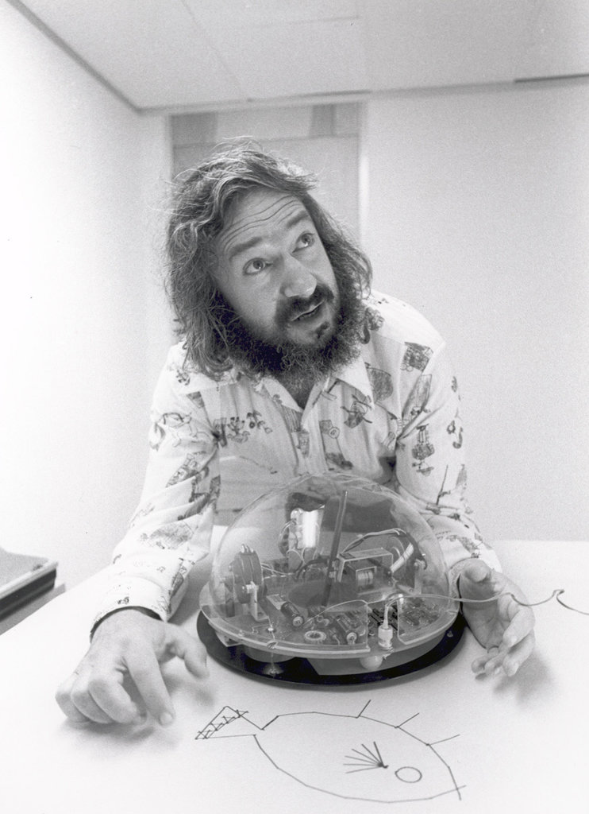
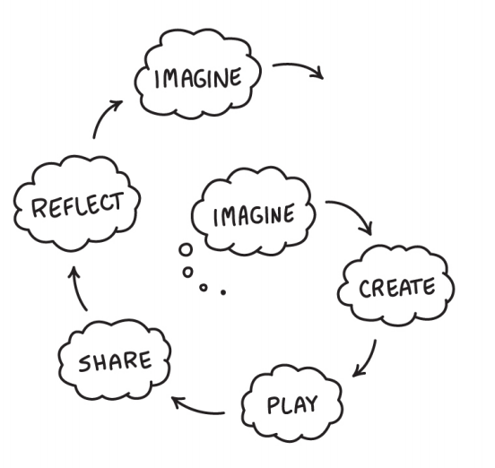

class: center, middle .title-header[Civiform] .title[Coding e Robotica] .subtitle[per l’innovazione sociale] .title-footer[Cividale, gennaio-febbraio 2022] --- # Coding .process[ .center[ problema → soluzione → algoritmo → programma]] .stages[ 1. .stage[analisi] 2. .stage[progettazione] 3. .stage[coding] 4. .stage[collaudo] ] --- # Coding .process[ .center[ problema → soluzione → .coding[algoritmo → programma]]] .stages[ 1. .stage[analisi] 2. .stage[progettazione] 3. .stage[.coding[coding]] 4. .stage[collaudo] ] --- # Algoritmo Strategia di risoluzione di un .keyword[problema]: * finito * deterministico * non ambiguo * generale Deriva dal nome del matematico persiano **al-Khwarizmi**. --- # Algoritmo Spesso espresso in .keyword[pseudocodice]: ```cpp inizio imposta la velocità del robot a 100 per sempre DISTANZA = distanza dall’ostacolo più vicino se DISTANZA > 40 allora prosegui dritto altrimenti svolta a sinistra o destra fine ``` --- # Algoritmo Spesso espresso in .keyword[pseudocodice]: ```cpp inizio imposta la velocità del robot a 100 per sempre DISTANZA = distanza dall’ostacolo più vicino se DISTANZA > 40 allora prosegui dritto altrimenti * svolta a sinistra o destra fine ``` --- # Soluzioni non-deterministiche -- * quando una componente aleatoria è necessaria -- .center[ .example[ simulazioni, videogiochi, test automatici, …]] --- # Soluzioni non-deterministiche * quando una componente aleatoria è necessaria * quando una soluzione deterministica non è applicabile -- **→ per ragioni di efficienza** -- .center[ .example[ applicazione concorrente di più algoritmi]] --- # Soluzioni non-deterministiche * quando una componente aleatoria è necessaria * quando una soluzione deterministica non è applicabile **→ per ragioni di efficienza** **→ per questioni di complessità** .center[ .example[ algoritmi probabilistici “sufficientemente” buoni]] --- # Algoritmo dello struzzo > In computer science, the **ostrich algorithm** is a strategy of ignoring potential problems on the basis that they may be exceedingly rare. […]. It is used when it is more cost-effective to allow the problem to occur than to attempt its prevention. .author[ — Wikipedia] --- # Linguaggio di programmazione Linguaggio **formale** per la programmazione di un calcolatore. Dotato di **sintassi** e **semantica** ben definite. * **sintassi**: definisce le istruzioni e le regole di ricombinazione * **semantica**: specifica l’effetto sortito da ogni istruzione È il mezzo di comunicazione tra programmatore e calcolatore. --- # Pensiero computazionale * **analisi** → esercitare il pensiero * **progettazione** → formalizzare il pensiero * **codifica** → automatizzare il pensiero * **collaudo** → validare del pensiero .important[ Il riscontro oggettivo e immediato della bontà della soluzione corrente permette di instaurare un ciclo virtuoso che accelera il raggiungimento della soluzione cercata] --- class: center, middle .title[Scratch] --- # Origini * 1967 — Seymour Papert inventa il linguaggio LOGO al MIT * 1985 — Mitchell Resnick e Papert fondano il MIT Media Lab * 2002 — primo prototipo di Scratch (v. 0.1) * 2005 — prima versione funzionante di Scratch --- .center[] .illustration[ Seymour Papert, 1969] --- .center[] .illustration[ Mitchell Resnick, 2011] --- .center[] .illustration[ Spirale dell’apprendimento creativo] --- class: middle, center .process[Projects, Peers, Passion, Play] --- # Storia * 2007 — Scratch v. 1.0, prima versione * 2009 — Scratch v. 1.4, la grande diffusione * 2013 — Scratch v. 2.0, versione on-line * 2013 — Scratch v. 3.0, Scratch Foundation --- # Scratch * Doppia versione, online e offline * Gratuito e Open Source * Ricca e vivace comunità virtuale * Consente la condivisione e il remix dei progetti --- class: center, middle .important[ www.scratch.mit.edu] --- class: center, middle .title[Narrazione] --- # Narrazione -- * presentazioni -- * animazioni -- * storie interattive --- # Narrazione * .highlight[presentazioni] * animazioni * storie interattive --- # Narrazione * presentazioni * animazioni * .highlight[storie interattive] --- # Interactive Fiction -- * origine riconducibile ai **libri-gioco** (anni 70) -- * 1975 — “ADVENT”, prima avventura testuale -- * 1982 — “Avventura nel castello”, in italiano --- .center[] .illustration[ Avventura nel castello, 1982] --- class: center, middle [https://www.avventuranelcastello-js.it](https://www.avventuranelcastello-js.it) --- # Interactive Fiction * origine riconducibile ai **libri-gioco** (anni 70) * 1975 — “ADVENT”, prima avventura testuale * 1982 — “Avventura nel castello”, in italiano -- * 1987 — “Maniac Mansion”, prima avventura punta-e-clicca --- .center[] .illustration[ Maniac Mansion, 1987] --- .center[] .illustration[ Machinarium, 2009] --- # Interactive Fiction * origine riconducibile ai **libri-gioco** (anni 70) * 1975 — “ADVENT”, prima avventura testuale * 1982 — “Avventura nel castello”, in italiano * 1987 — “Maniac Mansion”, prima avventura punta-e-clicca --- class: center, middle .important[ Il pacco rubato (E. Colombini)]